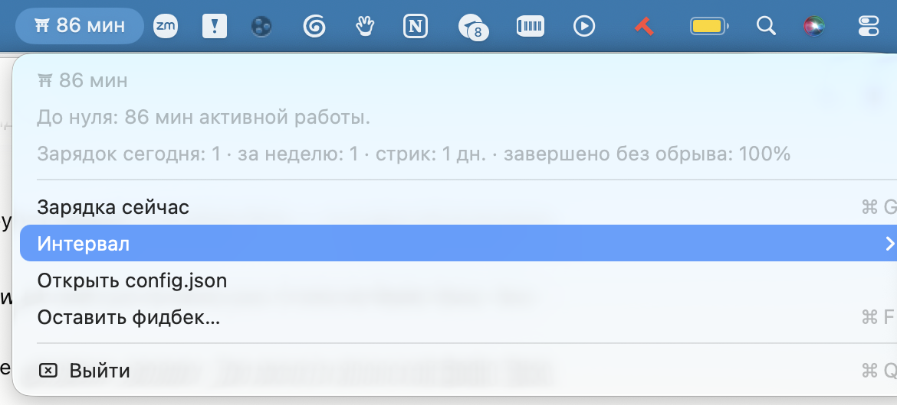
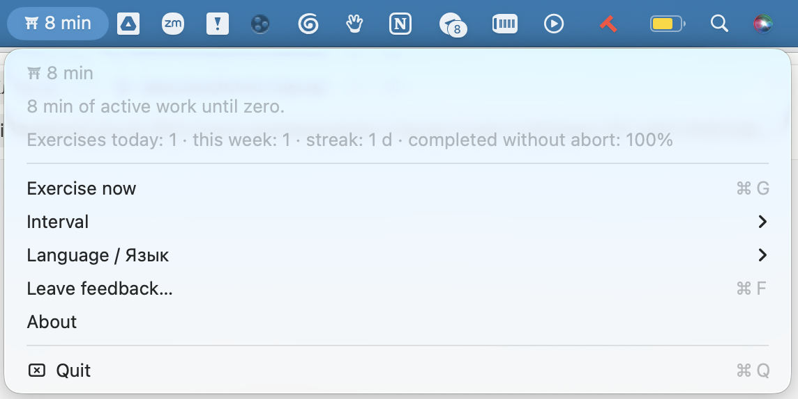

Клод не будет работать,
пока ты не сделаешь зарядкуClaude won't work
until you've exercised
Три минуты японской Radio Taiso покупают час работы твоего AI-агента. Мягкая, старая как радио практика — и шлагбаум, который невозможно закрыть кнопкой «потом». Three minutes of Japanese Radio Taiso buys an hour of your AI agent's work. A gentle routine older than television — and a gate you can't dismiss with a "later" button.
/bin/bash -c "$(curl -fsSL https://raw.githubusercontent.com/weinsteinsasha/taiso/main/get.sh)"
macOS · Claude Code · Homebrew · Xcode CLT · код открыт:source: github.com/weinsteinsasha/taiso
何Что такое Radio Taiso?What is Radio Taiso?
Radio Taiso (ラジオ体操, «радио-гимнастика») — национальная японская зарядка: 13 простых движений под музыку, ровно 3 минуты. Её составили врачи так, чтобы за эти 3 минуты поработало всё, что страдает от сидения: шея, плечи, спина, поясница, бока, ноги — и дыхание. Radio Taiso (ラジオ体操, "radio calisthenics") is Japan's national exercise routine: 13 simple movements set to music, exactly 3 minutes. It was composed by physicians so that those 3 minutes work everything that suffers from sitting: neck, shoulders, back, lower back, sides, legs — and breathing.
В этом её сила: ни одно движение не сложное, но вместе они прокатывают всё тело. Не тренировка — перезагрузка: кровь разгоняется, плечи раскрываются, спина вспоминает, что она умеет разгибаться. Три минуты — и этого достаточно, если делать регулярно. Регулярность здесь обеспечена: за неё отвечает твой агент. That's its power: no single movement is hard, but together they roll through the whole body. Not a workout — a reset: blood moves, shoulders open, your back remembers how to straighten. Three minutes is enough — if done regularly. And regularity is guaranteed here: your agent is in charge of it.
8 из 13 движений комплекса: от потягивания до дыхания. Всё — стоя у стола, за 3 минуты, в темпе музыки. 8 of the 13 movements: from stretching to breathing. All standing at your desk, in 3 minutes, at the music's pace.
体操Вот эта зарядкаThis is the routine
Radio Taiso №1 — та самая, канон 1951 года. 3 минуты 22 секунды, 13 движений, всё тело. Именно этот ролик открывается на весь экран, когда баланс на нуле. Radio Taiso No.1 — the 1951 canon. 3 minutes 22 seconds, 13 movements, full body. This exact video opens fullscreen when your balance runs out.
Ведёт зарядку Аки — бывший школьный учитель из Японии, минималист в кимоно и автор канала Samurai Matcha. Он показывает Radio Taiso так, как её делают дома и в офисах по всей Японии: спокойно, без надрыва, в обычной одежде. Мы вдохновились именно им — если зарядка зайдёт, загляни на его канал. The instructor is Aki — a former school teacher from Japan, a minimalist in a kimono, and the author of Samurai Matcha. He shows Radio Taiso the way it's done in homes and offices across Japan: calmly, in everyday clothes. He is who inspired us — if the routine clicks, visit his channel.
видео используется как ссылка на YouTube-плеер автора; все права на ролик — у Samurai Matcha the video is embedded via the author's YouTube player; all rights belong to Samurai MatchaRadio Taiso придумана, чтобы её делали где угодно: у стола, между стульями, в офисной рубашке. Шаг в сторону от ноутбука — вся площадка, что нужна. Есть и версия сидя — для звонков, самолётов и совсем ленивых дней. Никакой йоги, никакого пота, ничего, что требует переодеться или выйти из комнаты. Radio Taiso was designed to be done anywhere: at your desk, between chairs, in an office shirt. One step away from the laptop is all the space you need. There's a seated version too — for calls, planes and very lazy days. No yoga, no sweat, nothing that requires changing clothes or leaving the room.
物語ПредысторияThe backstory
Привет! Я Саша, и я папа.Hi! I'm Sasha, and I'm a dad.
За последнее время моя жизнь сильно изменилась: я начал клодкодить. С марта я каждый день провожу по десять–двенадцать часов за Claude Code. От агента невозможно оторваться: он всё время что-то дописывает, а ты всё время «почти закончил». Раньше из-за стола выгоняла усталость от самого программирования — теперь программирует агент, а усталость отменили. My life has changed a lot recently: I started Claude-coding. Since March I've been spending ten to twelve hours a day inside Claude Code. You can't tear yourself away from an agent: it's always finishing something up, and you're always "almost done." Tiredness from programming itself used to push me away from the desk — now the agent does the programming, and tiredness got cancelled.
За эти полгода у меня вырос живот и ослабла спина. Появились те самые программистские проблемы, которых у меня никогда не было — потому что я никогда не был программистом. In those six months I grew a belly and my back got weak. I developed the classic programmer problems I'd never had — because I had never been a programmer.
Своему ребёнку я ставлю родительский контроль: экранное время, лимиты, всё как положено. А себе — нет. Таймеры и напоминалки закрывал не глядя — как и все, кого я спросил. Помогло единственное: отдать контроль тому, от кого не оторваться. Теперь мой агент — мой родительский контроль. Пришло время. I set up parental controls for my kid: screen time, limits, all of it. And none for myself. I dismissed timers and reminders without looking — like everyone I asked. Only one thing helped: giving the controls to the thing I can't quit. Now my agent is my parental control. It was time.
— Саша ВайнштейнSasha Weinstein
LinkedIn —
подпишись: буду рассказывать, чем это закончится (спойлер: стрик пока жив).
follow along: I'll be sharing how this ends (spoiler: the streak is alive).
長寿Почему японцы, почему это работаетWhy Japan, why it works
С 1928 года каждое утро в 6:30 по национальному радио Япония делает одну и ту же трёхминутную зарядку. Почти сто лет. Школы, заводы, офисы, парки. Since 1928, every morning at 6:30, Japan has done the same three-minute routine on national radio. Almost a century. Schools, factories, offices, parks.
Секрет не в интенсивности — движения нарочно мягкие. Секрет в том, что убраны все причины не делать: не надо выбирать упражнения, не надо переодеваться, не надо решать «когда». Музыка началась — тело само вспомнило. Это ритуал, а не тренировка, и поэтому он переживает любые дедлайны. The secret isn't intensity — the movements are deliberately gentle. The secret is that every reason not to do it has been removed: no choosing exercises, no changing clothes, no deciding "when". The music starts — the body remembers. It's a ritual, not a workout, which is why it survives any deadline.
Япония — страна с одной из самых высоких продолжительностей жизни на планете, и геронтологи среди причин стабильно называют не марафоны, а ежедневное лёгкое движение, встроенное в быт. Radio Taiso — самый массовый его пример. Japan has one of the highest life expectancies on the planet, and gerontologists consistently credit not marathons but daily gentle movement built into everyday life. Radio Taiso is its most massive example.
Мы просто поменяли триггер: вместо радио в 6:30 — твой агент, который раз в час говорит «сначала зарядка, потом код». We just changed the trigger: instead of the 6:30 radio — your agent, saying "exercise first, then code" once an hour.
声Из опроса операторов агентовFrom our survey of agent operators
«Сижу 8–9 часов. Не делаю ничего — считаю, что зарядка утром работает весь день, хотя это точно не так. Напоминания от Гармина не работают никогда. Спина болит по утрам, пока не разомну». "I sit 8–9 hours. I do nothing — I tell myself the morning workout covers the whole day, which it definitely doesn't. Garmin reminders never work. My back hurts every morning until I stretch."
оператор агентов, 8–9 ч/день с Claude Codeagent operator, 8–9 h/day with Claude Code«10–12 часов. Безостановочно гоняю Клода с телефона или ноутбука — даже когда хожу по беговой дорожке. Болит спина, живот вырос». "10–12 hours. I run Claude non-stop from my phone or laptop — even while walking on a treadmill. Back hurts, belly grew."
фаундер, 10–12 ч/деньfounder, 10–12 h/day«Последний месяц почти не сидел за компом — и ничего не болит, начала появляться форма. До этого сидел по 6–7 часов». "Barely touched the computer this past month — nothing hurts, I'm getting in shape. Before that I sat 6–7 hours a day."
тот же опрос — единственный, у кого ничего не болит. Совпадение? Нет same survey — the only one with zero pain. Coincidence? No印Всегда перед глазамиAlways in sight


Циферка возле часов тает, пока агент работает. Клик — стрик, статистика, зарядка досрочно и смена ритма в два клика. The number by the clock melts while your agent works. Click it — streak, stats, exercise early, change your rhythm in two clicks.
道Как это устроеноHow it works
結果Было — сталоBefore — after
| БылоBefore | СталоAfter | |
|---|---|---|
| Часов сидя без перерываHours sitting non-stop | 4–10 подряд4–10 straight | максимум ~1 час~1 hour max |
| Движения за рабочий деньMovement per workday | ≈ 0 минут≈ 0 minutes | 18–30 минут, сами собой18–30 minutes, automatically |
| Сила воли потраченаWillpower spent | вся (и не хватило)all of it (not enough) | ноль — решает шлагбаумzero — the gate decides |
| Напоминания закрыты кнопкойReminders dismissed | всеall of them | закрывать нечегоnothing to dismiss |
Честно: продукту несколько дней, это данные первых пользователей, а не клиническое исследование. Ровно поэтому вечером аппка сама спрашивает «как прошёл день» — мы собираем настоящие «было/стало», и через месяц здесь будут цифры, а не обещания. Honestly: the product is days old — this is first-user data, not a clinical study. That's exactly why the app asks "how was your day?" every evening: we're collecting real before/after, and in a month this table will hold numbers, not promises.
始Начать сейчас — это бесплатноStart now — it's free
/bin/bash -c "$(curl -fsSL https://raw.githubusercontent.com/weinsteinsasha/taiso/main/get.sh)"
Бесплатно, без регистрации и подписок. Передумал —
Free, no sign-up, no subscriptions. Changed your mind —
~/.radio-taiso/bin/uninstall.sh
вернёт всё как было и не обидится.
puts everything back and holds no grudge.